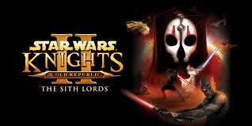

WebPage Links
Background
Hi there! I'm a 1st year Applied Cyber Security & Information Technology Student. I like emulating games, practicing martial arts, and writing(but not so much reading) books.
My current main interest are Star Wars, Naruto, and Elder Scrolls
Most Recently Finished Game

Star Wars: Knights of the Old Republic 2 was originally released in 2004 but I think it still holds up today.
Fun Fact: On my first play through I beat the final boss by running in a circle and dropping mines.
Current Show I'm Watching

A lot of people at IIT seem to like One Piece but I perfer a different member of the Big Three. Ninja Magic, Great Themes, Child Soilders, what else do you need in a show?
Fun Fact: Apparently this show used to air on Cartoon Network